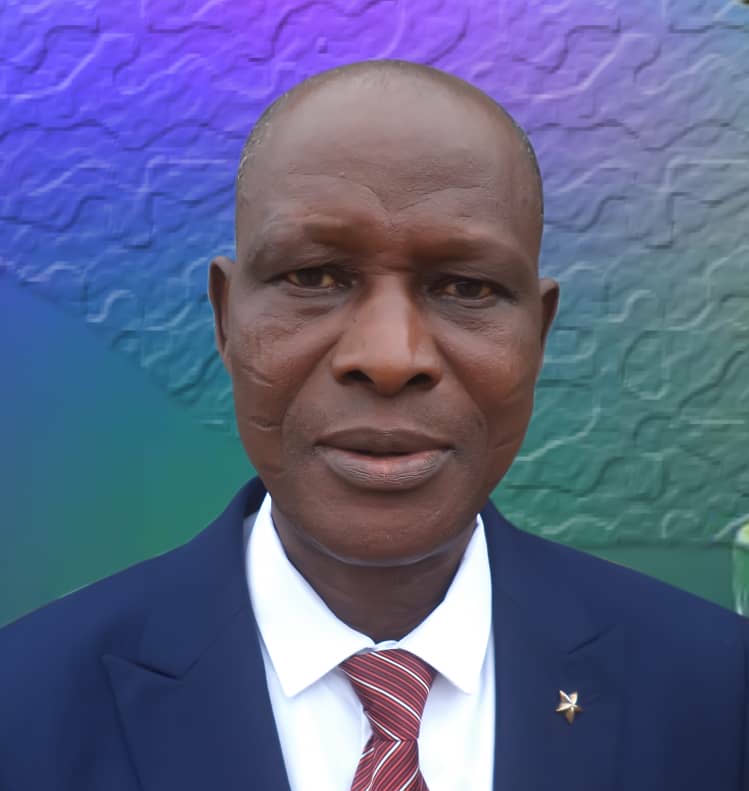
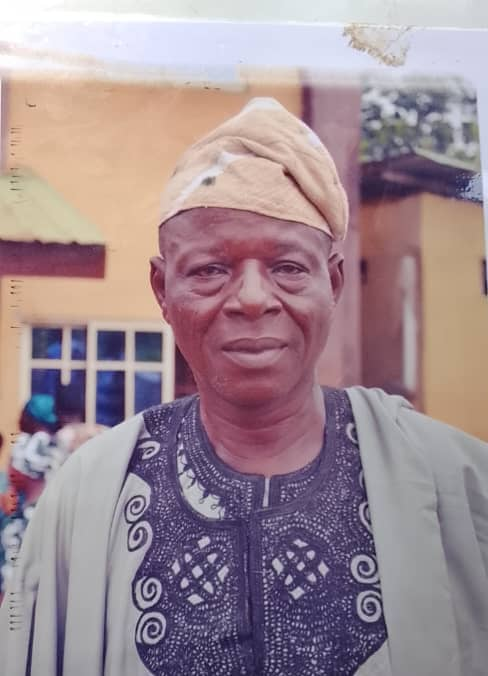
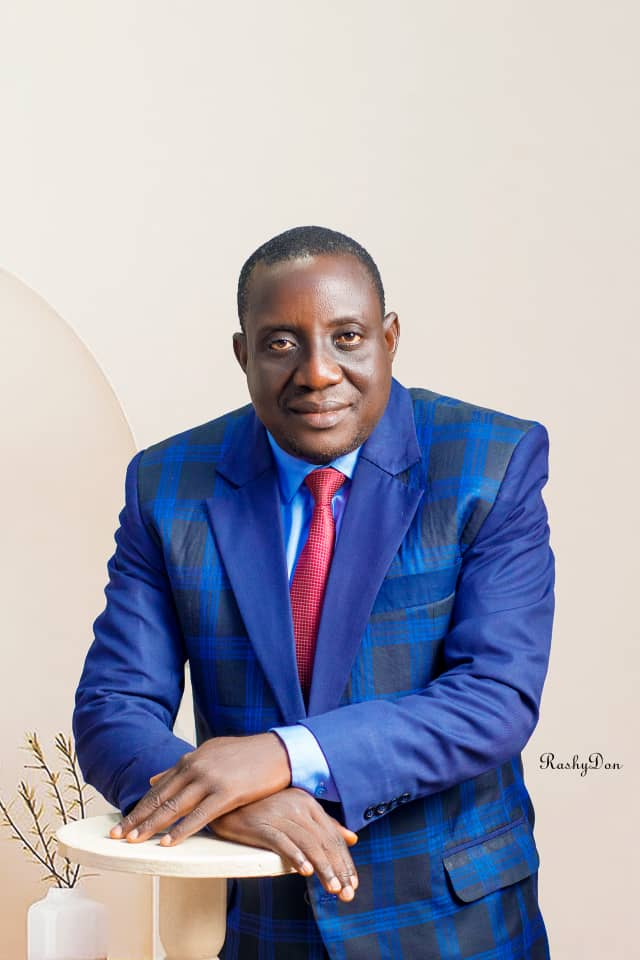

Welcome to Gospel Of Truth Mission
"Ye Shall Know The Truth…… John 8:32"
About the Church
A Short Story of Gospel of Truth Mission
Through the grace of God and assistance of the Holy Spirit, this great Mission came on board precisely on the 4th of April 1994 (4/4/1994). The first and second meetings came up at the premises of our outgoing General Overseer Pastor Emmanuel Olumide Odeyale at No. 9, Ishau Street, off Igando Road, Ikotun, Lagos State, Nigeria, and the meeting location later moved to the residence of Late Pastor John Jimoh Bada at No. 13, Kehinde Babatunde Street, Abaranje, Okerube, Lagos State, Nigeria.
It was like a child's play when this group of zealous and dedicated brethren decided to come together and stand for the truth without a shift of the Ancient Landmark of the Gospel (The Faith of our fathers).
Within a period of less than four weeks, the arrangement was up and the church was officially inaugurated on the 1st of May 1994 (01/05/1994) (31 years ago) at Bishop Aggey Memorial Secondary School, Mushin, Lagos State, Nigeria.
According to God's leading, Late Pastor John Jimoh Bada was nominated and operated as Acting General Overseer from 1st of May 1994 to 1st of May 1995 (a period of one year) and through prayer and directive of the Holy Spirit, Pastor Emmanuel Olumide Odeyale emerged as the first General Overseer of Gospel of Truth Mission on the 1st of May 1994 and he piloted the canoe of this powerful Institution for a period of 3 years without Division or Diversion of our vision, focus and determination.
In the course of his Administration, due to old age and health condition, Pastor Christopher Kolawole Ekundayo who also is a co-founder of this Mission was appointed by the Central Council of Elders as Acting General Overseer in October 2022, and as part of his assigned duties, he successfully anchored the Transition process through which our General Overseer, Pastor Emmanuel Olumide Odeyale voluntarily handed the baton of leadership to Pastor Amos Awolere Adegoke to continue the work as the New General Overseer.
Our Heroes Past
The narration will not be complete without mentioning some of our Great men and women who have gone to glory. Some of them though dead are still speaking. These heroes of faith fought relentlessly, and successfully laid their sword at the cross of Jesus Christ. We pay tribute to Evangelist Bamidele Aleilo, Pastor Oba, Pastor James Akinwande, Pastor Israel Folorunso Johnson, Sis Yinka Alonge, Pastor John Jimoh Bada, Pastor John Olawale Oyeleye, Pastor R.F Awolere and some others we cannot mention now. May the Lord count all of us worthy to stand faithfully to the end. It is well with you.
At Gospel of Truth Mission, we welcome people from all walks of life to join us in worship, fellowship, and service. Whether you are seeking a deeper relationship with God or a place to grow and serve, you will find a warm, Bible-based community committed to spiritual growth, sound doctrine, and community transformation.
Worship
Heartfelt worship that honors God and transforms lives
Fellowship
Building meaningful relationships within our church family
Service
Actively serving our community and those in need
Foundation of the Church
Gospel Of Truth Mission held its first service on the first of May, 1994 at Arch Bishop Aggey Memorial Secondary School, Ilasamaja, Mushin. It was a gathering of some zealous Christians numbering about 85.
Our Beginning
Our church was born out of a divine vision and calling to create a sanctuary where the pure gospel could be preached, where lives could be transformed, and where community could flourish. From its inception, Gospel Of Truth Mission has been committed to maintaining the authentic Christian faith as revealed in Scripture.
Built on Biblical Principles
We stand firmly on the foundation of the apostles and prophets, with Jesus Christ himself as the cornerstone. Our church structure and governance are based on biblical principles, ensuring that everything we do aligns with God's word and will.
Our Vision
Our Vision is to win souls for Christ with the evidence of the genuine salvation and holy living which will make them qualify for heaven through the preaching and teaching of the Bible.
Our Mission
Our mission is to spread the Gospel of Jesus Christ to sinners, teaching sound doctrine to believers with aim of preparing them for heaven through all available means.
Fundamental Beliefs
The Divine Inspiration of the Holy Bible (2 Timothy 3:16-17)
The Trinity of the Godhead, Father, Son and Holy Ghost (Matthew 28:19)
The Total Depravity of Human Race (Romans 5:12)
Justification or New Birth (Romans 5:1)
Restitution (Ezekiel 33:15)
Water Baptism as a Testimony to Salvation (Matthew 3:16)
The Baptism of the Holy Ghost (John 14:16)
The Gifts and Fruit of the Spirit (1 Cor. 12:1-11)
The Lord's Supper (Matthew 26:26)
Gifts, Offering and Tithes (2 Cor 9:6)
One Man, One Wife and No Divorce or Re-marriage (Gen 2:21)
Divine Healing and Present Day Miracles (1 Peter 2:24)
Church Leadership
Central Council of Elders (CCE)
Pastor Amos A. Adegoke (G.O)
General Overseer

Pastor Anise Joshua Hunpatin
Assistant General Overseer / Badagry Divisional Overseer
Pastor Eliot Soetan
Lagos Divisional Overseer / National Prayer Leader

Pastor Timothy Sunday Jolaoso
Ota Divisional Overseer
Pastor Joel A. Wheto
National Sunday-School Superintendent / National Administrator

Pastor Emmanuel Adejoju Adeyemi
General Secretary / National Correspondent
Pastor Francis Amos Aremu
National Welfare Minister

Pastor Sunday Bamidele Ojekunle
National Men Leader
Pastor Timothy Johnson
National Children Pastor
Pastor James Johnson
National Youth Pastor / National Treasurer
Pastor Hoteyin Daniel Ageh
National Evangelist Leader

Pastor Jidenu David Awhanhode
National Delegated Elder / National Teens Pastor
My name is Awhanhode Jidenu David. Born in Tenvo Compound, Ahovo, Ipokia, Ogun State, I once lived a life marked by sin, addiction, and darkness. However, in February 1989, I gave my life to Jesus Christ, and everything changed. Since then, God's grace has transformed me, and I've experienced His unwavering love and guidance. I'm a living testament to the power of faith and redemption. And I'm happily married.

Pastor Taiwo Togbo
National Delegated Elder / Assistant Welfare Officer
Emmanuel Sadare
National Choir Master
My name is Emmanuel Adeniyi Shadare. I'm from Ipaja, Lagos. Studied Mass Communication at the Federal Polytechnic, Ilaro. I became born again and baptized by immersion in 2012 and baptism of the holy ghost in 2019. Started the music career at music college in 2012. I joined the National choir in 2012 and since then participating in the unit till date. The journey started as the Assistant youth leader at Ipaja branch, then I joined the National Youth Committee in 2021 and then appointed as the National Choir Leader and member of the CCE in 2025.
Kehinde Hunpegan
National Financial Secretary / National Media Leader
Church Programmes
Join us in our various ministries and activities
Sunday Worship Service
Join us for our main worship service featuring inspiring sermons, congregational singing, and corporate prayer. Experience the presence of God as we gather together in unity and faith.
Bible Study
A powerful time of corporate prayer where we seek God's face, intercede for our community, and experience the unity that comes through prayer together.
Prayer Meeting
Dive deep into God's Word through interactive Bible study sessions. Grow in your understanding of Scripture and apply biblical principles to daily life.
Youth Ministry
Dynamic youth gatherings featuring worship, games, biblical teaching, and fellowship designed specifically for teenagers and young adults.
Church Fasting
A dedicated season of spiritual seeking through prayer and fasting, as the entire church comes together to seek God's direction for the year ahead.
Community Outreach
Serve our community through various outreach programs including food distribution, visits to hospitals, and support for the less privileged.
Church Videos & Sermons
Watch our latest sermons and church events. Click on a video to view on YouTube.
Note: Videos link to YouTube. Please ensure compliance with YouTube's Terms of Service.
Programme Information
All programmes are free and open to everyone. For more information about any of our programmes, please contact us at gospeloftruthmission@gmail.com or speak with any of our ushers during service.
Special Note: Programme times may be subject to change. Please check our weekly bulletin or announcements for any updates.